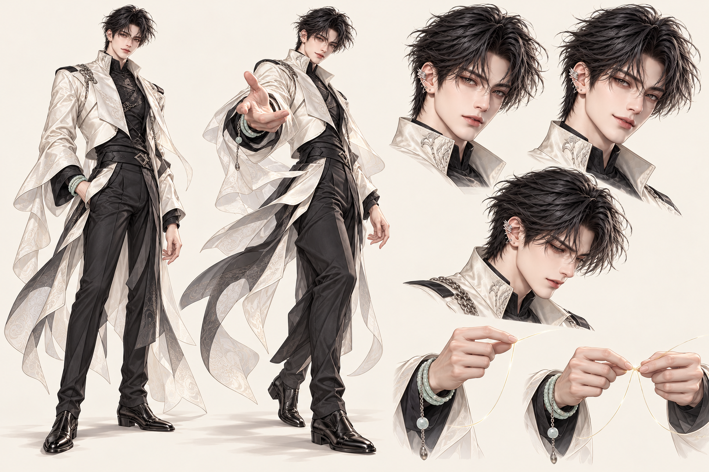
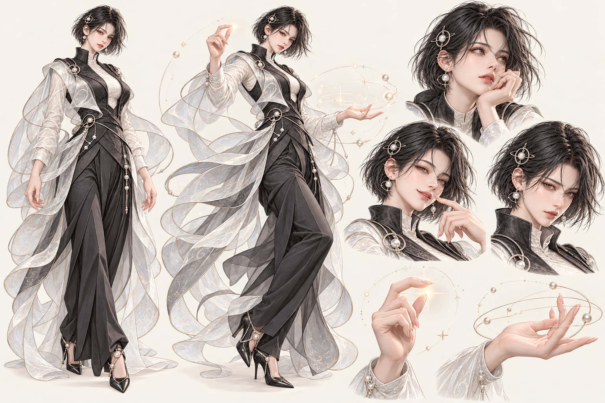

01. 본질의 남신
크게 보기 ↗
같은 얼굴과 의상을 유지하며, 관찰하는 표정과 연결하는 손동작을 확장합니다.
선을 잇는 신. 별을 펼치는 신.
각자의 방식으로, 당신의 이야기를 드러냅니다.

여유로운 관찰자. 여러 조건 속에서 반복되는 연결을 발견하고, 손끝으로 그 선을 당겨 보여줍니다.
“잠깐. 이 글자가 두 곳에서 같은 일을 하고 있군요.”
말을 아끼고, 발견한 연결부터 꺼냅니다.동작은 이미지와 선의 화면 연출 견본입니다. 대사는 캐릭터 말투 예시이며 실제 명식 판정이 아닙니다.

같은 얼굴과 의상을 유지하며, 관찰하는 표정과 연결하는 손동작을 확장합니다.

짧은 머리와 원형 장식을 고정하고, 별의 위치를 짚고 배치를 펼치는 동작을 확장합니다.
조건의 연결을 찾아, 그 사람의 구조를 읽습니다.
별의 위치와 관계를 펼쳐, 분야마다 드러나는 모습을 읽습니다.
앞뒤의 흐름을 비교하고, 달라지는 지점을 짚습니다.
두 사람의 차이를 나란히 놓고, 만나는 지점과 부딪히는 지점을 읽습니다.
주어진 날짜와 시간의 후보를 비교하고, 추천의 이유를 차분히 설명합니다.
시간·인연·탄생의 신은 역할과 동작 설계 단계입니다. 외형과 성별은 아직 확정하지 않았습니다. 다섯 명칭은 책사 캐릭터의 역할명입니다.
현대적인 실루엣, 정교한 얼굴, 절제된 초월적 장식. 상징은 의상과 손동작에 연결합니다.
선·점·층·교차·씨앗. 캐릭터의 성별과 무관하게, 맡은 분야가 행동을 결정합니다.
엔진이 확인한 조건을 각 인물의 말투로 설명합니다. 캐릭터의 권위로 근거 없는 판정을 덧붙이지 않습니다.
캐릭터와 동작은 재사용하고, 강조할 글자·별·시점·문장은 이용자의 결과에 맞춰 바뀝니다.
다음 제작 단위: 주역별 등장·관찰·연결·강조·경계·종합의 6장면. 이번 시트는 외형과 동작 방향을 정하는 1차 콘셉트입니다.
앞선 스크롤 연출 견본 ↗